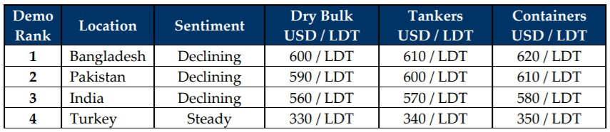

inWeekly Demolition Reports07/12/2021

The recycling markets remained subdued this week again, with very few (serious) transactions to note as price and demand have taken a serious hit over recent weeks.
Indian steel plate prices have declined by well over USD 60/LDT, leaving the Alang market lagging seriously behind its regional competitors, whilst both Pakistan and Bangladesh remain tentative in submitting fresh offers as they watch India’s ongoing decline.
As such, there have been very few new candidates to consider as Vessel Owners themselves have decided to take a step back from recycling any eligible units, perhaps hoping for freight markets to pick up again going into 2022.
Currencies continue to be of concern, both in Turkey and even in Pakistan, where the PKR reportedly depreciated by about 1.5% since November 20th. This has led to minimal buying interest from Gadani Recyclers on the marginal number of vessels currently available and working firm.
Crew changes too are becoming an issue once again, as the Omicron Covid-10 variant sweeps the world and ports (globally) are gradually closing their borders for international travel / crew changes / foreign crews arriving for take over.
Lastly, the Turkish market was the only one, where, despite a collapsing Lira and a minor downward adjustment in import steel, the Aliaga market overall remained cautiously steady this week.
Taking all of the above into account, it may therefore be a quieter end to the year in the recycling markets and all will be hoping for a rejuvenated appetite to buy, in addition to firming prices, as 2022 comes around.
For week 50 of 2021, GMS demo rankings / pricing for the week are as below.

📄 Download PDF: December-3rd-2021.pdfSource: GMS,Inc. (https://www.gmsinc.net/gms_new/index.php/web)